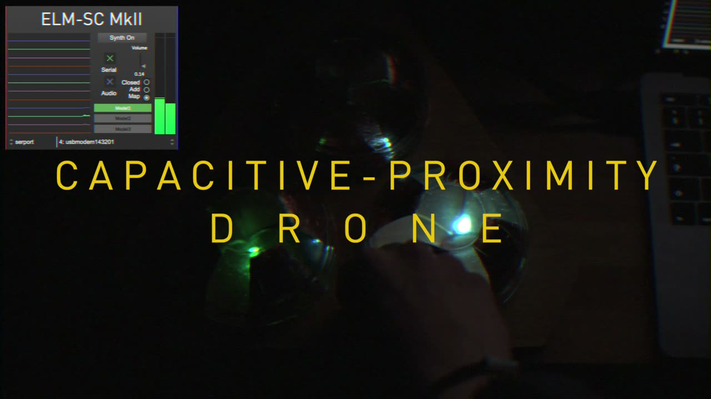

Capacitive-Proximity Drone with Machine Learning
Abstract
The instrument focuses on a tactile way to create and control sounds, using machine learning (multiple regression) to manipulate 28 parameters in a simple and accessible way. Running one’s hands over the 3 domes modulates a 10-voice drone along with various effects, with RGB lights reflecting the different areas of each of the domes and adding visual feedback. The human body’s capacitance of around 180-200pF is utilised to detect its proximity to the domes. A microcontroller sends a new state through each of the copper regions through a high-value resistor and records the time required to return the new state. The body’s capacitance and the resistor create an RC timing circuit, whose time dictates the distance of the hand from each of the sensors. The combination of readings controls the drone. The copper regions are connected to the ADCs of an Arduino, with PWM pins controlling the leds. The drone features a simple GUI to control the machine learning model. A display also shows the state of each of the 12 copper regions.
Demonstration Video

▶Requirements
The device’s audio can be picked up by an interface with loopback functionality or via sharing the sound with screen sharing. The device can’t be operated remotely so can only be demonstrated by the author.
Program Description
A demo showcase would explore in greater detail the construction and operation of the instrument, along with how the sounds and effects are generated and modulated. It would also allow for live programming of the device’s machine learning models. Future development ideas for the instrument will also be discussed, along with covering the instrument’s connection to music therapy.
Acknowledgments
The author would like to thank Niccolo Granieri for support and guidance during the design and development of the instrument, along with Brendan Elmes for providing great inspiration for the pursuit of electronics and coding throughout university.
This work has been supported by Birmingham City University.